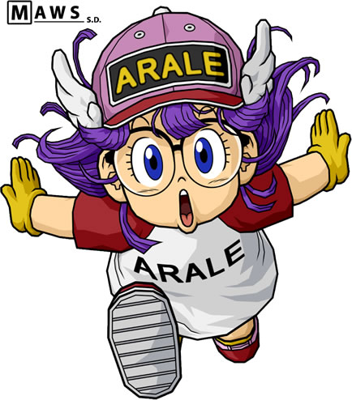

One
Two
Three
SCALE
USING JS
SCALE HOVER JS
SCALE ADD CLASS JS
HOVER TOGGLE CLASS JS
CLICK JS
CSS CLICK EVENT SIMULATION
:active-- the changes are not kept

transition hack-- the change is kept but cannot be reversed
checkbox hack-- the change can be reversed
checkbox hack with hidden checkbox and label
Scale A!
Scale B!
A
B
ROTATE
SKEW
TRANSLATE